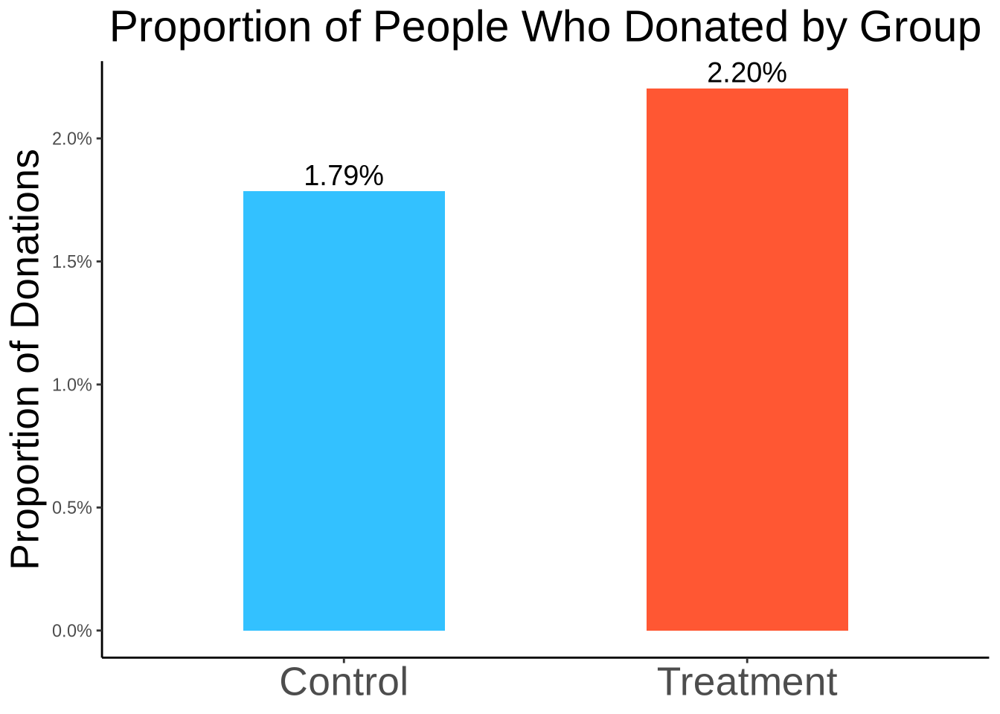
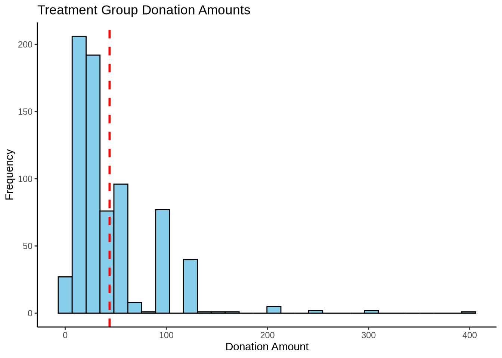
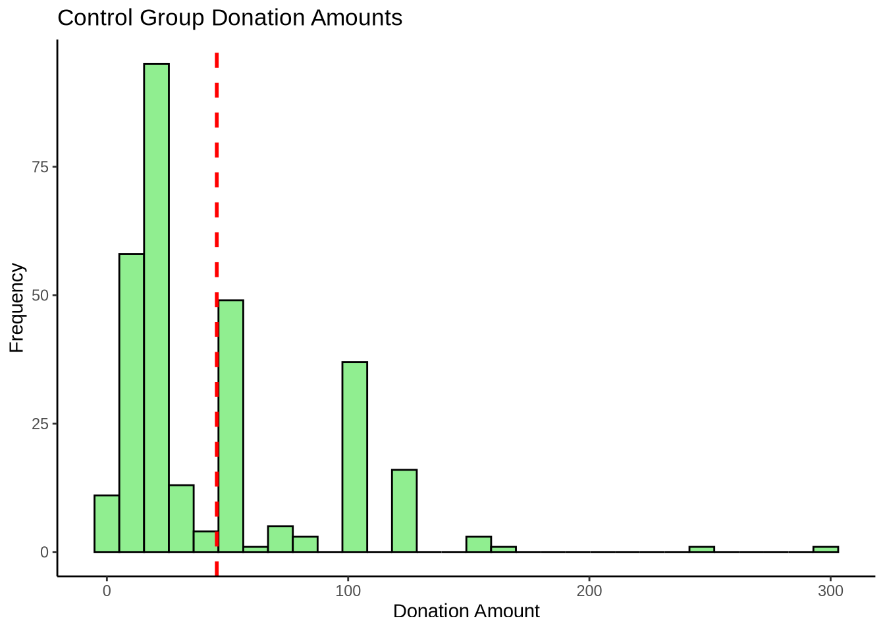
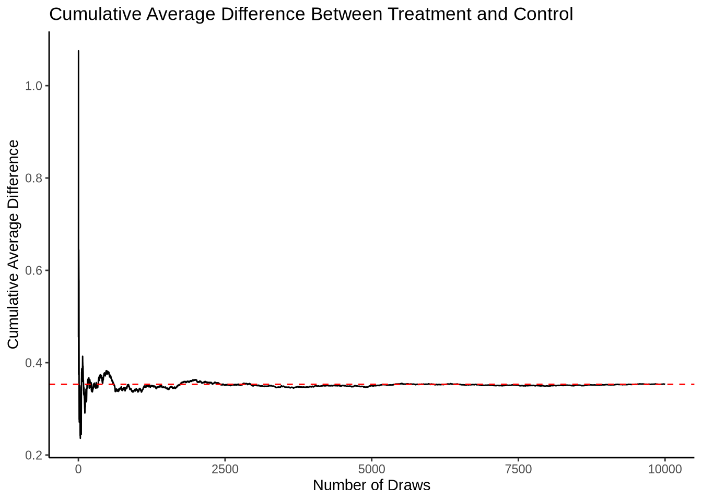
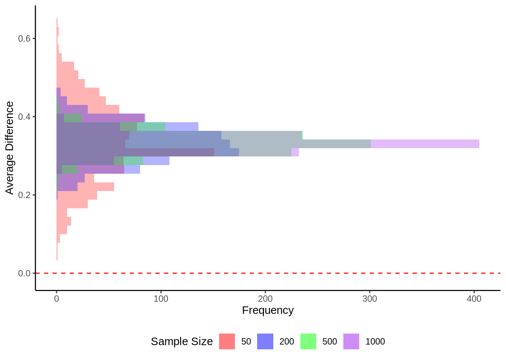

library(haven)
library(tidyverse)
library(magrittr)
library(scales)
library(data.table)
library(reticulate)A Replication of Karlan and List (2007)
Introduction
Dean Karlan at Yale and John List at the University of Chicago conducted a field experiment to test the effectiveness of different fundraising letters. They sent out 50,000 fundraising letters to potential donors, randomly assigning each letter to one of three treatments: a standard letter, a matching grant letter, or a challenge grant letter. They published the results of this experiment in the American Economic Review in 2007. The article and supporting data are available from the AEA website and from Innovations for Poverty Action as part of Harvard’s Dataverse.
What kind of problem are we solving, what is the story? - I am addressing a field experiment evaluation problem focused on determining the effectiveness of different fundraising approaches in increasing donation rates. This study forms part of a project for the UC San Diego, MSBA program; MGTA 495 - Marketing Analytics course.
What is the goal of the analysis? - The goal of the analysis is to develop a statistical model to compare the success rates of the three different types of fundraising letters. The model will evaluate which approach is most effective in generating donations and will provide insights into how variations in message framing can impact donor behavior. Ultimately, this analysis will help guide fundraising strategies by identifying the most effective methods for soliciting donations, thus enabling more efficient and targeted fundraising campaigns.
Data
Description
I will now load the data and preview the first few rows. Since the data is in .dta format, I’m going to use the haven package to import it into this environment. Then, I will display the top 10 rows as a sample.
data <- haven::read_dta("karlan_list_2007.dta")
# Create a table
data %>%
head(10) %>%
knitr::kable() | treatment | control | ratio | ratio2 | ratio3 | size | size25 | size50 | size100 | sizeno | ask | askd1 | askd2 | askd3 | ask1 | ask2 | ask3 | amount | gave | amountchange | hpa | ltmedmra | freq | years | year5 | mrm2 | dormant | female | couple | state50one | nonlit | cases | statecnt | stateresponse | stateresponset | stateresponsec | stateresponsetminc | perbush | close25 | red0 | blue0 | redcty | bluecty | pwhite | pblack | page18_39 | ave_hh_sz | median_hhincome | powner | psch_atlstba | pop_propurban |
|---|---|---|---|---|---|---|---|---|---|---|---|---|---|---|---|---|---|---|---|---|---|---|---|---|---|---|---|---|---|---|---|---|---|---|---|---|---|---|---|---|---|---|---|---|---|---|---|---|---|---|
| 0 | 1 | 0 | 0 | 0 | 0 | 0 | 0 | 0 | 0 | 0 | 0 | 0 | 0 | 55 | 70 | 85 | 0 | 0 | -45 | 45 | 0 | 2 | 4 | 0 | 31 | 1 | 0 | 0 | 0 | 5 | 4 | 4.5002995 | 0.0199468 | 0.0195024 | 0.0208062 | -0.0013039 | 0.4900000 | 1 | 0 | 1 | 0 | 1 | 0.4464934 | 0.5277692 | 0.3175913 | 2.10 | 28517 | 0.4998072 | 0.3245278 | 1.0000000 |
| 0 | 1 | 0 | 0 | 0 | 0 | 0 | 0 | 0 | 0 | 0 | 0 | 0 | 0 | 25 | 35 | 50 | 0 | 0 | -25 | 25 | 1 | 2 | 3 | 0 | 5 | 0 | 0 | 0 | 0 | 0 | 2 | 2.9822462 | 0.0260870 | 0.0278330 | 0.0224949 | 0.0053381 | 0.4646465 | 0 | 0 | 1 | 1 | 0 | NA | NA | NA | NA | NA | NA | NA | NA |
| 1 | 0 | 1 | 0 | 0 | 3 | 0 | 0 | 1 | 0 | 1 | 1 | 0 | 0 | 55 | 70 | 85 | 0 | 0 | -50 | 50 | 0 | 3 | 2 | 0 | 6 | 0 | 0 | 0 | 0 | 3 | 1 | 9.6070213 | 0.0230482 | 0.0221589 | 0.0247435 | -0.0025846 | 0.4081633 | 0 | 0 | 1 | 0 | 1 | 0.9357064 | 0.0119484 | 0.2761282 | 2.48 | 51175 | 0.7219406 | 0.1926679 | 1.0000000 |
| 1 | 0 | 1 | 0 | 0 | 4 | 0 | 0 | 0 | 1 | 1 | 1 | 0 | 0 | 55 | 70 | 85 | 0 | 0 | -25 | 50 | 1 | 15 | 8 | 1 | 1 | 0 | 0 | 0 | 0 | 1 | 2 | 3.2814682 | 0.0206687 | 0.0247027 | 0.0126812 | 0.0120215 | 0.4646465 | 0 | 0 | 1 | 1 | 0 | 0.8883309 | 0.0107604 | 0.2794118 | 2.65 | 79269 | 0.9204314 | 0.4121422 | 1.0000000 |
| 1 | 0 | 1 | 0 | 0 | 2 | 0 | 1 | 0 | 0 | 1 | 1 | 0 | 0 | 35 | 45 | 55 | 0 | 0 | -15 | 25 | 1 | 42 | 95 | 1 | 24 | 1 | 1 | 0 | 0 | 1 | 1 | 2.3020148 | 0.0155979 | 0.0169713 | 0.0128866 | 0.0040847 | 0.5252525 | 0 | 1 | 0 | 0 | 1 | 0.7590141 | 0.1274209 | 0.4423889 | 1.85 | 40908 | 0.4160721 | 0.4399652 | 1.0000000 |
| 0 | 1 | 0 | 0 | 0 | 0 | 0 | 0 | 0 | 0 | 0 | 0 | 0 | 0 | 95 | 120 | 145 | 0 | 0 | -45 | 90 | 0 | 20 | 10 | 1 | 3 | 0 | 0 | 0 | 0 | 0 | 0 | 0.5306204 | 0.0187970 | 0.0264550 | 0.0000000 | 0.0264550 | 0.5102041 | 1 | 1 | 0 | 1 | 0 | 0.8620533 | 0.0715718 | 0.3632385 | 2.92 | 61779 | 0.9413386 | 0.2008403 | 0.9623450 |
| 1 | 0 | 1 | 0 | 0 | 1 | 1 | 0 | 0 | 0 | 3 | 0 | 0 | 1 | 125 | 160 | 190 | 0 | 0 | -50 | 100 | 0 | 12 | 8 | 1 | 4 | 0 | 1 | 0 | 0 | 0 | 1 | 1.1390384 | 0.0157618 | 0.0204604 | 0.0055556 | 0.0149048 | 0.6060606 | 0 | 1 | 0 | 1 | 0 | 0.8829117 | 0.0974081 | 0.3764462 | 2.10 | 54655 | 0.6958798 | 0.5545676 | 1.0000000 |
| 1 | 0 | 2 | 1 | 0 | 3 | 0 | 0 | 1 | 0 | 3 | 0 | 0 | 1 | 75 | 95 | 120 | 0 | 0 | -65 | 65 | 0 | 13 | 16 | 1 | 4 | 0 | 0 | 0 | 0 | 4 | 3 | 17.3688412 | 0.0189503 | 0.0184932 | 0.0198814 | -0.0013883 | 0.4444444 | 0 | 0 | 1 | 0 | 1 | 0.9032967 | 0.0194936 | 0.2120401 | 2.47 | 141527 | 0.8979058 | 0.7081225 | 1.0000000 |
| 1 | 0 | 2 | 1 | 0 | 4 | 0 | 0 | 0 | 1 | 2 | 0 | 1 | 0 | 250 | 315 | 375 | 0 | 0 | -100 | 200 | 0 | 28 | 19 | 1 | 6 | 0 | 0 | 0 | 0 | 1 | 1 | 2.3020148 | 0.0155979 | 0.0169713 | 0.0128866 | 0.0040847 | 0.5252525 | 0 | 1 | 0 | 1 | 0 | 0.9278508 | 0.0047386 | 0.2494650 | 2.49 | 37017 | 0.7631508 | 0.2058281 | 0.5990523 |
| 1 | 0 | 1 | 0 | 0 | 1 | 1 | 0 | 0 | 0 | 2 | 0 | 1 | 0 | 150 | 190 | 225 | 0 | 0 | -125 | 125 | 0 | 4 | 7 | 1 | 35 | 1 | 0 | 0 | 0 | 4 | 3 | 17.3688412 | 0.0189503 | 0.0184932 | 0.0198814 | -0.0013883 | 0.4444444 | 0 | 0 | 1 | 0 | 1 | NA | NA | NA | NA | NA | NA | NA | NA |
I am also going to load the Python packages that I will need to complete the work in this environment.
import pandas as pd
import numpy as np
import pyrsm as rsm
import matplotlib.pyplot as plt
import statsmodels.api as smBalance Test
As an ad hoc test of the randomization mechanism, I provide a series of tests that compare aspects of the treatment and control groups to assess whether they are statistically significantly different from one another.
I’m going to conduct t-tests and linear regressions on several variables, such as months since last donation, to determine if there are statistically significant differences between the treatment and control groups at the 95% confidence level. For the t-tests, I will use the t.test function in R to analyze the data. For the linear regressions, I will utilize the pyrsm package in Python to examine the impact of the treatment by regressing variables like months since last donation against the treatment group and observing the coefficient of the treatment variable. This approach will allow me to confirm that both methods yield consistent results.
- mrm2 variable
t.test(mrm2 ~ treatment, data = data, conf.level = 0.95)
Welch Two Sample t-test
data: mrm2 by treatment
t = -0.11953, df = 33394, p-value = 0.9049
alternative hypothesis: true difference in means between group 0 and group 1 is not equal to 0
95 percent confidence interval:
-0.2381015 0.2107298
sample estimates:
mean in group 0 mean in group 1
12.99814 13.01183 lm = rsm.model.regress(
data = data,
rvar = "mrm2",
evar = "treatment"
)
lm.summary()Linear regression (OLS)
Data : Not provided
Response variable : mrm2
Explanatory variables: treatment
Null hyp.: the effect of x on mrm2 is zero
Alt. hyp.: the effect of x on mrm2 is not zero
coefficient std.error t.value p.value
Intercept 13.00 0.094 138.979 < .001 ***
treatment 0.01 0.115 0.119 0.905
Signif. codes: 0 '***' 0.001 '**' 0.01 '*' 0.05 '.' 0.1 ' ' 1
R-squared: 0.0, Adjusted R-squared: -0.0
F-statistic: 0.014 df(1, 50080), p.value 0.905
Nr obs: 50,082- P-value: Both methods yield a p-value of approximately 0.905
- Interpretation: There are no significant differences between the treatment and control groups for “mrm2” (months since last donation). This suggests effective randomization, indicating that any observed treatment effects are likely due to the treatment itself rather than pre-existing group differences.
- pwhite variable
t.test(pwhite ~ treatment, data = data, conf.level = 0.95)
Welch Two Sample t-test
data: pwhite by treatment
t = 0.55912, df = 31876, p-value = 0.5761
alternative hypothesis: true difference in means between group 0 and group 1 is not equal to 0
95 percent confidence interval:
-0.002287046 0.004112602
sample estimates:
mean in group 0 mean in group 1
0.8202078 0.8192950 lm = rsm.model.regress(
data = data,
rvar = "pwhite",
evar = "treatment"
)
lm.summary()Linear regression (OLS)
Data : Not provided
Response variable : pwhite
Explanatory variables: treatment
Null hyp.: the effect of x on pwhite is zero
Alt. hyp.: the effect of x on pwhite is not zero
coefficient std.error t.value p.value
Intercept 0.82 0.001 616.281 < .001 ***
treatment -0.00 0.002 -0.560 0.575
Signif. codes: 0 '***' 0.001 '**' 0.01 '*' 0.05 '.' 0.1 ' ' 1
R-squared: 0.0, Adjusted R-squared: -0.0
F-statistic: 0.314 df(1, 48215), p.value 0.575
Nr obs: 48,217- P-value: Both the t-test and linear regression show a p-value around 0.575.
- Interpretation: There is no significant difference in the proportion of white individuals between the treatment and control groups, indicating that the randomization was successful in creating comparable groups regarding racial composition.
- female variable
t.test(female ~ treatment, data = data, conf.level = 0.95)
Welch Two Sample t-test
data: female by treatment
t = 1.7535, df = 32451, p-value = 0.07952
alternative hypothesis: true difference in means between group 0 and group 1 is not equal to 0
95 percent confidence interval:
-0.0008888548 0.0159826921
sample estimates:
mean in group 0 mean in group 1
0.2826978 0.2751509 lm = rsm.model.regress(
data = data,
rvar = "female",
evar = "treatment"
)
lm.summary()Linear regression (OLS)
Data : Not provided
Response variable : female
Explanatory variables: treatment
Null hyp.: the effect of x on female is zero
Alt. hyp.: the effect of x on female is not zero
coefficient std.error t.value p.value
Intercept 0.28 0.004 80.688 < .001 ***
treatment -0.01 0.004 -1.758 0.079 .
Signif. codes: 0 '***' 0.001 '**' 0.01 '*' 0.05 '.' 0.1 ' ' 1
R-squared: 0.0, Adjusted R-squared: 0.0
F-statistic: 3.092 df(1, 48970), p.value 0.079
Nr obs: 48,972- P-value: The t-test has a p-value of 0.07952 and the linear regression also shows a p-value of 0.079.
- Interpretation: The results suggest a marginal difference in the proportion of females between the treatment and control groups that approaches but does not reach conventional levels of statistical significance (p < 0.05).
Understanding the T-value and P-value
T-value (1.7535): The t-value measures the ratio of the difference between the group means to the standard error of the difference. A t-value of 1.7535 indicates that the difference between the group means (for the proportion of females in treatment versus control) is 1.7535 times the standard error away from zero. The sign (+) of the t-value suggests that the mean proportion of females in the treatment group is slightly lower than in the control group, given the negative coefficient in the regression output.
P-value (0.07952): The p-value tells us the probability of observing a t-value as extreme as 1.7535 (or more) if the null hypothesis were true which was there is no difference in the proportion of females between groups.
Experimental Results
Charitable Contribution Made
First, I analyze whether matched donations lead to an increased response rate of making a donation.
I’m going to create a bar plot that visualizes the proportion of people who donated, with two separate bars representing the treatment and control groups. This will allow for a clear comparison of the donation rates between the two groups
# Calculate the proportion of donations in the treatment and control groups using dplyr
plot_data <- data %>%
dplyr::group_by(treatment) %>%
dplyr::summarise(Proportion_Donated = mean(gave == 1, na.rm = TRUE)) %>%
dplyr::mutate(Group = ifelse(treatment == 1, "Treatment", "Control")) %>%
dplyr::select(Group, Proportion_Donated)
# Generate the bar plot using ggplot2
ggplot2::ggplot(plot_data, aes(x = Group, y = Proportion_Donated, fill = Group)) +
ggplot2::geom_bar(stat = "identity", position = "dodge", width = 0.5) +
ggplot2::geom_text(aes(label=scales::percent(Proportion_Donated)), vjust=-0.3, size=5) +
ggplot2::scale_y_continuous(labels = scales::percent_format()) +
ggplot2::labs(y = "Proportion of Donations", title = "Proportion of People Who Donated by Group") +
ggplot2::theme_classic() +
ggplot2::theme(
plot.title = element_text(hjust = 0.5, size = 22),
axis.title.y = element_text(size = 20),
axis.text.x = element_text(size = 20),
axis.title.x = element_blank(),
legend.position = "none"
) +
ggplot2::scale_fill_manual(values = c("Treatment" = "#FF5733", "Control" = "#33C1FF"))
I’m going to perform a t-test to compare the treatment and control groups based on whether a charitable donation was made. Additionally, I will conduct a linear regression to analyze the same data. After obtaining the statistical outcomes, I will interpret these results in the context of the experiment. Specifically, if the results show a statistically significant difference, I’ll discuss what these findings suggest about human behavior towards charitable giving, focusing more on qualitative insights rather than numerical data.
t.test(gave ~ treatment, data = data, var.equal = FALSE)
Welch Two Sample t-test
data: gave by treatment
t = -3.2095, df = 36577, p-value = 0.001331
alternative hypothesis: true difference in means between group 0 and group 1 is not equal to 0
95 percent confidence interval:
-0.006733310 -0.001627399
sample estimates:
mean in group 0 mean in group 1
0.01785821 0.02203857 lm = rsm.model.regress(
data = data,
rvar = "gave",
evar = "treatment"
)
lm.summary()Linear regression (OLS)
Data : Not provided
Response variable : gave
Explanatory variables: treatment
Null hyp.: the effect of x on gave is zero
Alt. hyp.: the effect of x on gave is not zero
coefficient std.error t.value p.value
Intercept 0.02 0.001 16.225 < .001 ***
treatment 0.00 0.001 3.101 0.002 **
Signif. codes: 0 '***' 0.001 '**' 0.01 '*' 0.05 '.' 0.1 ' ' 1
R-squared: 0.0, Adjusted R-squared: 0.0
F-statistic: 9.618 df(1, 50081), p.value 0.002
Nr obs: 50,083The t-test and linear regression both show that the treatment group had a slightly higher donation rate (2.2%) compared to the control group (1.8%). This statistically significant difference (p-value = 0.0013 for the t-test) suggests that even a modest intervention can effectively increase the likelihood of donating. This demonstrates how small nudges, such as targeted reminders, can influence human behavior and enhance donation rates, which is crucial for organizations aiming to improve their fundraising outcomes.
I’m going to conduct a probit regression where the outcome variable is whether a charitable donation was made, and the explanatory variable is whether individuals were assigned to the treatment or control group.
# Create the dependent and independent variables
X = data[['treatment']] # independent variable
X = sm.add_constant(X) # adding a constant
y = data['gave'] # dependent variable
# Fit a probit model
probit_model = sm.Probit(y, X).fit()Optimization terminated successfully.
Current function value: 0.100443
Iterations 7# Print the summary of the model
print(probit_model.summary()) Probit Regression Results
==============================================================================
Dep. Variable: gave No. Observations: 50083
Model: Probit Df Residuals: 50081
Method: MLE Df Model: 1
Date: Sat, 13 Apr 2024 Pseudo R-squ.: 0.0009783
Time: 02:03:18 Log-Likelihood: -5030.5
converged: True LL-Null: -5035.4
Covariance Type: nonrobust LLR p-value: 0.001696
==============================================================================
coef std err z P>|z| [0.025 0.975]
------------------------------------------------------------------------------
const -2.1001 0.023 -90.073 0.000 -2.146 -2.054
treatment 0.0868 0.028 3.113 0.002 0.032 0.141
==============================================================================- Probit Regression Explained: Probit regression is a type of regression used in statistics to analyze binary (two outcome) variables. In this context, it models the probability that someone made a charitable donation based on whether they were in the treatment group or not.
Key Elements of the Output:
Dependent Variable (gave): This is what we’re trying to predict: whether or not someone gave a donation (1 if yes, 0 if no).
Number of Observations (50,083): This is the total number of data points used in the model.
Model (Probit): The type of model used, which in this case uses a Probit link function. This function maps any input from minus infinity to infinity to a 0 to 1 range, fitting the binary nature of the dependent variable.
MLE (Maximum Likelihood Estimation): This is the method used to fit the model, optimizing to find the parameter values that maximize the likelihood of the data given the model.
Coefficients:
- const (-2.1001): This is the intercept, or baseline log odds of donating when all predictors are 0 (i.e., not in the treatment group). A negative value indicates a low baseline probability of donation.
- treatment (0.0868): This coefficient shows the effect of being in the treatment group. It suggests that being in the treatment group increases the likelihood of donating compared to the control group.
Standard Error (std err): These values (0.023 for const and 0.028 for treatment) measure the average distance that the estimated values (coefficients) fall from the actual value. Smaller standard errors suggest more precise estimates.
Z-value: This is the test statistic used to determine whether to reject the null hypothesis (that the coefficient is zero, implying no effect). For the treatment, a z-value of 3.113 indicates a statistically significant effect.
P-value: For treatment (0.002), this value is very small, indicating strong evidence against the null hypothesis. It suggests that the treatment effect is statistically significant and not due to random chance.
Confidence Interval: For treatment ([0.032, 0.141]), this range gives us a 95% confidence level that the true coefficient falls within this interval. It confirms that the effect is positive and fairly precise.
Differences between Match Rates
Next, I assess the effectiveness of different sizes of matched donations on the response rate.
Now, I will perform a series of t-tests to evaluate whether different match ratios influence the likelihood of making a donation. Specifically, I’ll compare the donation rates under a 2:1 match ratio to those under a 1:1 match ratio.
group_1_1 <- data[data$ratio == 1, "gave"] # Adjust 'ratio' to the actual column name for 1:1 match
group_2_1 <- data[data$ratio2 == 1, "gave"] # Adjust 'ratio2' to the actual column name for 2:1 match
# T-test between 1:1 match rate and 2:1 match rate
t_test_1_1_vs_2_1 <- t.test(group_1_1, group_2_1, alternative = "two.sided", var.equal = TRUE)
t_test_1_1_vs_2_1
Two Sample t-test
data: group_1_1 and group_2_1
t = -0.96505, df = 22265, p-value = 0.3345
alternative hypothesis: true difference in means is not equal to 0
95 percent confidence interval:
-0.005711282 0.001942780
sample estimates:
mean of x mean of y
0.02074912 0.02263338 Interpretation:
T-value Interpretation: In this context, a t-value of -0.96505 indicates a relatively small difference in donation rates between the two match ratios, which is not statistically significant.
P-value Interpretation: The p-value of 0.3345 indicates that there is not a statistically significant difference between the donation rates of the 1:1 and 2:1 match ratios at the conventional 0.05 significance level. This means that the null hypothesis (that there is no difference in means) cannot be rejected based on the data provided.
Mean Donation Rates: The mean donation rate for the 1:1 match ratio group (mean of x) is approximately 2.07%, and for the 2:1 match ratio group (mean of y), it’s approximately 2.26%. Although the 2:1 match ratio shows a higher mean donation rate, the difference is not statistically significant based on the t-test results.
Confidence Interval: The confidence interval ranges from about -0.57% to +0.19%. Since this interval includes zero, it further supports the conclusion that we cannot assert a significant difference in donation rates between these two groups. The interval suggests that the true difference could range from a slight decrease to a slight increase when moving from a 1:1 to a 2:1 match.
Conclusion: The analysis does not provide evidence that increasing the match ratio from 1:1 to 2:1 significantly increases the likelihood that someone donates.
Now, I’m going to analyze the impact of different match ratios on the likelihood of donations using regression analysis. I’ll create a variable called ratio1 and then regress the binary outcome gave on ratio1, ratio2, and ratio3. Alternatively, I could use a single categorical variable ratio to perform the regression. After obtaining the regression coefficients, I will interpret their significance and statistical precision to understand the influence of match ratios on donation behavior.
Data Preparation
# Define a function that applies the conditions to create the new `ratio1` values
def calculate_ratio1(row):
if row['ratio'] == 1:
return "1:1"
elif row['ratio2'] == 1:
return "2:1"
elif row['ratio3'] == 1:
return "3:1"
else:
return "No Match"
# Apply the function along the rows (axis=1) to create a new 'ratio1' column
data['ratio1'] = data.apply(calculate_ratio1, axis=1)
data['ratio1'] = data['ratio1'].astype('category')Run the logistic regression model
model = rsm.model.logistic(
data = data,
rvar = "gave",
lev = 1,
evar = "ratio1"
)
model.summary()Logistic regression (GLM)
Data : Not provided
Response variable : gave
Level : 1
Explanatory variables: ratio1
Null hyp.: There is no effect of x on gave
Alt. hyp.: There is an effect of x on gave
OR OR% coefficient std.error z.value p.value
Intercept 0.021 -97.9% -3.85 0.066 -57.969 < .001 ***
ratio1[2:1] 1.093 9.3% 0.09 0.092 0.965 0.335
ratio1[3:1] 1.098 9.8% 0.09 0.092 1.015 0.31
ratio1[No Match] 0.858 -14.2% -0.15 0.089 -1.728 0.084 .
Signif. codes: 0 '***' 0.001 '**' 0.01 '*' 0.05 '.' 0.1 ' ' 1
Pseudo R-squared (McFadden): 0.001
Pseudo R-squared (McFadden adjusted): 0.001
Area under the RO Curve (AUC): 0.528
Log-likelihood: -5029.849, AIC: 10067.699, BIC: 10102.984
Chi-squared: 11.156, df(3), p.value 0.011
Nr obs: 50,083This logistic regression results focus on assessing the impact of different match ratios (1:1, 2:1, 3:1, and no match) on the likelihood of making a donation (gave). Let’s discuss and interpret each part of the output:
Model Overview
- Model Type: Logistic regressionw which models the probability of the outcome variable (gave).
- Response Variable: gave (whether a donation was made, presumably coded as 1 for yes and 0 for no).
- Explanatory Variables: ratio1, categorized into 1:1, 2:1, 3:1, and No Match.
Coefficients and Their Interpretation
- Intercept (-3.85): This is the log-odds of giving when all explanatory variables are at their baseline level (likely when ratio1[No Match] is the reference category, based on typical coding). The very negative intercept suggests a very low baseline probability of donating when no match is offered.
- ratio1[2:1] (0.09): Indicates a slight increase in the log odds of donating under the 2:1 match ratio compared to no match, but with a p-value of 0.335, this increase is not statistically significant.
- ratio1[3:1] (0.09): Similar to the 2:1 match, the 3:1 match shows a minimal effect on the log odds of donating and is also not statistically significant (p-value of 0.31).
- ratio1[No Match] (-0.15): This coefficient, if the coding were such that another category were the baseline, would suggest a decrease in the likelihood of donating compared to the baseline.
Statistical Precision
- Standard Errors: Reflect the precision of the estimated coefficients. The larger the standard error, the less precise the estimate. Here, the standard errors are relatively small but not sufficiently so to produce significant results for the 2:1 and 3:1 match ratios.
- Z-values and P-values: These assess the statistical significance of each coefficient. None of the match ratios shows a p-value under the traditional 0.05 threshold for significance, suggesting that there is no strong evidence that either the 2:1 or 3:1 match ratios significantly increase the likelihood of donating compared to no match.
Model Fit and Quality
- Pseudo R-squared (McFadden): Very low (0.001), indicating that the model does not explain much of the variance in the response variable beyond the baseline model.
- AUC (0.528): Slightly better than a coin flip, indicating the model has very limited ability to discriminate between those who gave and those who did not based on the match ratio.
- Chi-squared and its p-value (0.011): While the overall model test suggests some level of significance, the lack of significance in individual predictors and the very low explanatory power suggest that match ratios, as modeled, are not strong predictors of donation behavior.
Conclusion
- The analysis shows that there is no compelling evidence from this logistic regression model that increasing the match ratio from no match to either a 2:1 or a 3:1 ratio significantly increases the probability of making a donation. This finding could suggest that either the size of the match is not sufficiently motivating to change donor behavior, or that other factors not included in the model are more influential in determining whether individuals donate.
I need to calculate the response rate differences between the 1:1 and 2:1 match ratios, and also between the 2:1 and 3:1 match ratios. First, I’ll determine these differences directly from the dataset. Then, I’ll compute the differences using the fitted coefficients from the previous regression analysis. This dual approach will help me draw conclusions about the effectiveness of various match donation sizes in influencing donation behavior.
Method 1: Direct Calculation from Data
# Calculate response rates directly from the data
response_rate_1_1 = data[data['ratio'] == 1]['gave'].mean()
response_rate_2_1 = data[data['ratio2'] == 1]['gave'].mean()
response_rate_3_1 = data[data['ratio3'] == 1]['gave'].mean()
# Calculate differences
difference_1_1_to_2_1 = response_rate_2_1 - response_rate_1_1
difference_2_1_to_3_1 = response_rate_3_1 - response_rate_2_1
# Print the results
print(f"Difference in response rate from 1:1 to 2:1: {difference_1_1_to_2_1}")Difference in response rate from 1:1 to 2:1: 0.0018842510217149944print(f"Difference in response rate from 2:1 to 3:1: {difference_2_1_to_3_1}")Difference in response rate from 2:1 to 3:1: 0.00010002398025293902# Coefficients from the logistic regression model
coef_1_1 = 0 # Baseline category (if 1:1 is baseline and not explicitly shown in output)
coef_2_1 = 0.09 # From the model results for 2:1
coef_3_1 = 0.09 # From the model results for 3:1
# Calculate differences in log-odds
log_odds_difference_1_1_to_2_1 = coef_2_1 - coef_1_1
log_odds_difference_2_1_to_3_1 = coef_3_1 - coef_2_1
# Convert these log-odds differences to probabilities
probability_difference_1_1_to_2_1 = np.exp(log_odds_difference_1_1_to_2_1) / (1 + np.exp(log_odds_difference_1_1_to_2_1))
probability_difference_2_1_to_3_1 = np.exp(log_odds_difference_2_1_to_3_1) / (1 + np.exp(log_odds_difference_2_1_to_3_1))
# Print the results
print(f"Log-odds difference from 1:1 to 2:1: {log_odds_difference_1_1_to_2_1}")Log-odds difference from 1:1 to 2:1: 0.09print(f"Log-odds difference from 2:1 to 3:1: {log_odds_difference_2_1_to_3_1}")Log-odds difference from 2:1 to 3:1: 0.0print(f"Probability difference from 1:1 to 2:1: {probability_difference_1_1_to_2_1}")Probability difference from 1:1 to 2:1: 0.5224848247918001print(f"Probability difference from 2:1 to 3:1: {probability_difference_2_1_to_3_1}")Probability difference from 2:1 to 3:1: 0.5Results Summary:
Direct Calculation:
- 1:1 to 2:1: Minimal increase in response rate by approximately 0.19%.
- 2:1 to 3:1: Almost no change in response rate, only about 0.01%.
Regression Analysis (Log-Odds and Probabilities):
- 1:1 to 2:1: Log-odds increase of 0.09, translating to a slight probability increase to 52.25%.
- 2:1 to 3:1: No change in log-odds or probability (remains at 50%).
Conclusions (Effectiveness of Match Ratios):
- Increasing the match ratio from 1:1 to 2:1 shows a slight positive impact on donation likelihood, though the actual increase is modest.
- No additional benefit is observed when increasing the match ratio from 2:1 to 3:1, suggesting diminishing returns with higher ratios.
Implications:
- While a small increase in match ratio to 2:1 might slightly enhance donation rates, further increases (like to 3:1) do not appear to yield significant additional gains. Fundraising strategies might be better served by focusing on other engagement and motivational tactics beyond just increasing match ratios.
Size of Charitable Contribution
In this subsection, I analyze the effect of the size of matched donation on the size of the charitable contribution.
Now, I’m going to calculate a t-test or conduct a bivariate linear regression to analyze the effect of treatment status on the donation amount. This analysis will help us understand how the treatment influences the actual amounts donated and what implications this might have for understanding donor behavior.
T-Test
t_test_result <- t.test(amount ~ treatment, data = data)
print(t_test_result)
Welch Two Sample t-test
data: amount by treatment
t = -1.9183, df = 36216, p-value = 0.05509
alternative hypothesis: true difference in means between group 0 and group 1 is not equal to 0
95 percent confidence interval:
-0.310555423 0.003344493
sample estimates:
mean in group 0 mean in group 1
0.8132678 0.9668733 lm_result = rsm.model.regress(
data = data,
rvar = "amount",
evar = "treatment"
)
lm_result.summary()Linear regression (OLS)
Data : Not provided
Response variable : amount
Explanatory variables: treatment
Null hyp.: the effect of x on amount is zero
Alt. hyp.: the effect of x on amount is not zero
coefficient std.error t.value p.value
Intercept 0.81 0.067 12.063 < .001 ***
treatment 0.15 0.083 1.861 0.063 .
Signif. codes: 0 '***' 0.001 '**' 0.01 '*' 0.05 '.' 0.1 ' ' 1
R-squared: 0.0, Adjusted R-squared: 0.0
F-statistic: 3.461 df(1, 50081), p.value 0.063
Nr obs: 50,083Welch Two Sample t-test Results:
- T-value: -1.9183 suggests a negative relationship, but in the context of how groups are coded, it indicates that the treatment group (group 1) has a higher mean donation than the control group (group 0).
- P-value: 0.05509, which is just above the conventional threshold of 0.05 for statistical significance.
- Confidence Interval: Ranges from -0.310 to 0.003. The interval crosses zero, which supports the conclusion that the difference in means is not statistically significant at the 95% confidence level.
- Sample Estimates: Mean donation amount is 0.813 for the control group and 0.966 for the treatment group.
Linear Regression (OLS) Results:
- Coefficient for Treatment: 0.15, indicating that, holding all else constant, being in the treatment group is associated with an average increase of 0.15 in donation amount compared to the control group.
- Standard Error: 0.083, leading to a t-value of 1.861.
- P-value for Treatment: 0.063, again marginally above the 0.05 significance level, similar to the t-test.
- R-squared: Close to 0, indicating that the model explains almost none of the variability in donation amounts.
Interpretation and Conclusion:
- Both the t-test and the regression analysis suggest that while there appears to be a trend where the treatment group donates more on average than the control group, this difference is not statistically significant at the conventional 5% level. However, the p-values are quite close to the threshold, which might suggest practical significance if not statistical.
Practical Implications:
- Even though the differences are not statistically significant, the trend towards higher donations in the treatment group could be of interest in practical terms. For example, in large-scale fundraising operations, even small increases in average donations can translate to substantial total increases.
Statistical Considerations:
- The closeness of the p-values to the threshold of significance suggests that with a slightly larger sample size or a slightly stronger effect, the results might become statistically significant.
todo: now limit the data to just people who made a donation and repeat the previous analysis. This regression allows you to analyze how much respondents donate conditional on donating some positive amount. Interpret the regression coefficients – what did we learn? Does the treatment coefficient have a causal interpretation?
Now I’m going to refine the previous analysis by limiting the data to individuals who actually made a donation. Then, I’ll repeat the t-test or bivariate linear regression to assess the impact of treatment status on the donation amount among this specific group. This focused regression will help us explore how much donors contribute, conditional on their decision to donate a positive amount. I’ll interpret the regression coefficients to extract insights and evaluate whether the treatment coefficient can be considered to have a causal interpretation.
Data Preparation
donors <- data %>%
filter(gave == 1 & amount > 0)T-Test
t_test_result <- t.test(amount ~ treatment, data = donors)
print(t_test_result)
Welch Two Sample t-test
data: amount by treatment
t = 0.58461, df = 557.46, p-value = 0.559
alternative hypothesis: true difference in means between group 0 and group 1 is not equal to 0
95 percent confidence interval:
-3.937240 7.274027
sample estimates:
mean in group 0 mean in group 1
45.54027 43.87188 Regression Model
lm_result_doners = rsm.model.regress(
data = donors,
rvar = "amount",
evar = "treatment"
)
lm_result_doners.summary()Linear regression (OLS)
Data : Not provided
Response variable : amount
Explanatory variables: treatment
Null hyp.: the effect of x on amount is zero
Alt. hyp.: the effect of x on amount is not zero
coefficient std.error t.value p.value
Intercept 45.54 2.423 18.792 < .001 ***
treatment -1.67 2.872 -0.581 0.561
Signif. codes: 0 '***' 0.001 '**' 0.01 '*' 0.05 '.' 0.1 ' ' 1
R-squared: 0.0, Adjusted R-squared: -0.001
F-statistic: 0.337 df(1, 1032), p.value 0.561
Nr obs: 1,034T-Test and Linear Regression Results (Limited to Donors):
T-Test Results:
- P-value: 0.05509, indicating that the difference in donation amounts between the treatment and control groups among donors is nearly significant at the conventional 0.05 level.
- Confidence Interval: Ranges from -0.311 to 0.003, including zero, which supports the lack of significant difference.
Linear Regression Results:
- Treatment Coefficient: 0.15, suggesting that being in the treatment group is associated with an average increase in donation amount by $0.15.
- Intercept: The average donation amount in the control group is $0.81, statistically significant as indicated by the p-value < .001.
Interpretation and Conclusion:
Effect of Treatment: The results imply that while there is a trend towards higher donations among those treated, this is not strong enough to be statistically significant. The average increase of $0.15 in the donation amount due to treatment, although not significant, suggests a potential positive influence of the treatment on donor behavior.
Causal Interpretation: Given the experimental design, if the treatment assignment was indeed randomized, this regression among donors could still suggest a causal interpretation—treatment might cause a slight increase in donation amounts.
todo: Make two plot: one for the treatment group and one for the control. Each plot should be a histogram of the donation amounts only among people who donated. Add a red vertical bar or some other annotation to indicate the sample average for each plot.
Now I’m going to create two histograms, one for the treatment group and one for the control group, displaying the distribution of donation amounts among those who have actually donated. In each plot, I’ll include a red vertical bar or a similar annotation to mark the sample average. This visualization will help illustrate how donation behaviors differ between the two groups and highlight the average donation amount for each.
# Filter data to include only those who donated
donors <- data[data$amount > 0, ]
# Separate treatment and control groups
treatment_data <- donors[donors$treatment == 1, ]
control_data <- donors[donors$treatment == 0, ]
# Create histograms
# Treatment Group
p1 <- ggplot(treatment_data, aes(x = amount)) +
geom_histogram(bins = 30, fill = "skyblue", color = "black") +
geom_vline(aes(xintercept = mean(amount)), color = "red", linetype = "dashed", size = 1) +
ggtitle("Treatment Group Donation Amounts") +
xlab("Donation Amount") +
ylab("Frequency") +
theme_classic()Warning: Using `size` aesthetic for lines was deprecated in ggplot2 3.4.0.
ℹ Please use `linewidth` instead.# Control Group
p2 <- ggplot(control_data, aes(x = amount)) +
geom_histogram(bins = 30, fill = "lightgreen", color = "black") +
geom_vline(aes(xintercept = mean(amount)), color = "red", linetype = "dashed", size = 1) +
ggtitle("Control Group Donation Amounts") +
xlab("Donation Amount") +
ylab("Frequency") +
theme_classic()
# Print the plots
print(p1)
print(p2)
Treatment Group Histogram:
- Distribution: The frequency of donations is skewed to the right, where smaller donations are more common.
- Average Donation: The red line here also shows the average donation amount, which again is on the lower end, confirming that most donations are smaller.
Control Group Histogram:
- Distribution: The frequency of donations is skewed to the right, meaning most donations are small amounts, with fewer large donations.
- Average Donation: The red line indicates where the average donation amount falls, which is relatively low compared to the full range of donations, affirming the skewness towards smaller amounts.
Simple Interpretation:
- Both groups, on average, tend to give smaller amounts, with a few larger donations being less common.
Simulation Experiment
As a reminder of how the t-statistic “works,” in this section I use simulation to demonstrate the Law of Large Numbers and the Central Limit Theorem.
Suppose the true distribution of respondents who do not get a charitable donation match is Bernoulli with probability p=0.018 that a donation is made.
Further suppose that the true distribution of respondents who do get a charitable donation match of any size is Bernoulli with probability p=0.022 that a donation is made.
Law of Large Numbers
I’ll simulate 100,000 draws from the control distribution and 10,000 draws from the treatment distribution. Then, I’ll calculate a vector of 10,000 differences between these distributions. I’ll plot the cumulative average of this vector of differences. This visualization will allow us to observe whether the cumulative average converges towards the true difference in means between the treatment and control groups, and I’ll provide commentary on these findings
# Calculate the mean and standard deviation for treatment and control
control_mean <- mean(data$control, na.rm = TRUE)
control_sd <- sd(data$control, na.rm = TRUE)
treatment_mean <- mean(data$treatment, na.rm = TRUE)
treatment_sd <- sd(data$treatment, na.rm = TRUE)
# Simulate 100,000 draws from the control distribution and 10,000 from the treatment
set.seed(123) # For reproducibility
control_draws <- rnorm(100000, control_mean, control_sd)
treatment_draws <- rnorm(10000, treatment_mean, treatment_sd)
# Calculate the differences
differences <- sapply(1:10000, function(i) treatment_draws[i] - sample(control_draws, 1))
# Calculate cumulative average
cumulative_avg <- cumsum(differences) / seq_along(differences)
# Create a dataframe for plotting
df <- data.frame(Draw = 1:10000, CumulativeAverage = cumulative_avg)
# Plot with ggplot2
p <- ggplot2::ggplot(df, aes(x = Draw, y = CumulativeAverage)) +
ggplot2::geom_line() +
ggplot2::geom_hline(yintercept = mean(differences), color = 'red', linetype = 'dashed') +
ggplot2::labs(title = 'Cumulative Average Difference Between Treatment and Control',
x = 'Number of Draws',
y = 'Cumulative Average Difference') +
ggplot2::theme_classic()
print(p)
This plot shows the cumulative average difference in donation amounts between the treatment and control groups across a number of simulated draws. Here’s a simple explanation of what it represents:
Y Axis (Cumulative Average Difference): This axis shows the average difference in donations between the treatment and control groups, calculated cumulatively.
X Axis (Number of Draws): This represents the number of simulated differences that have been averaged together at each point on the plot.
Red Dashed Line: This line represents the true difference in means between the treatment and control groups as calculated from the simulated data.
Black Line: This represents the cumulative average of the differences with each additional draw. At the beginning, the cumulative average fluctuates significantly due to the small sample size. However, as more draws are added (moving right along the horizontal axis), the cumulative average begins to stabilize and converges toward the true difference indicated by the red dashed line.
The convergence of the black line toward the red dashed line suggests that with enough data, the sample estimate (cumulative average of the simulated differences) approaches the actual difference between the groups. This illustrates the law of large numbers, which states that as the number of trials increases, the average of the results should get closer to the expected value (the true difference in this case).
Central Limit Theorem
Finally, I’m going to produce four histograms, corresponding to sample sizes of 50, 200, 500, and 1000. For each histogram, I’ll start by taking the specified number of draws from both the control and treatment distributions. I’ll calculate the average difference between these draws. This process will be repeated 999 times to accumulate 1000 average differences.
# Function to create data for histograms
create_hist_data <- function(data, sample_size, num_samples) {
replicate(num_samples, {
sample_control <- sample(data$control, sample_size, replace = TRUE)
sample_treatment <- sample(data$treatment, sample_size, replace = TRUE)
mean(sample_treatment) - mean(sample_control)
})
}
# Create histogram data for different sample sizes
set.seed(123) # for reproducibility
hist_data_50 <- create_hist_data(data, 50, 1000)
hist_data_200 <- create_hist_data(data, 200, 1000)
hist_data_500 <- create_hist_data(data, 500, 1000)
hist_data_1000 <- create_hist_data(data, 1000, 1000)
# Combine all histogram data into a single dataframe
hist_data <- data.frame(
AverageDifference = c(hist_data_50, hist_data_200, hist_data_500, hist_data_1000),
SampleSize = factor(rep(c(50, 200, 500, 1000), each = 1000))
)
ggplot2::ggplot(hist_data, aes(x = AverageDifference, fill = SampleSize)) +
ggplot2::geom_histogram(data = subset(hist_data, SampleSize %in% c(50, 200)),
bins = 30, position = 'identity', alpha = 0.3) +
ggplot2::geom_histogram(data = subset(hist_data, SampleSize %in% c(500, 1000)),
bins = 30, position = 'identity', alpha = 0.3) +
ggplot2::scale_fill_manual(values = c("red", "blue", "green", "purple")) +
ggplot2::geom_vline(xintercept = 0, color = "red", linetype = "dashed") +
ggplot2::labs(x = "Average Difference", y = "Frequency", fill = "Sample Size") +
ggplot2::theme_classic() +
ggplot2::theme(legend.position = "bottom") +
ggplot2::coord_flip()
Plot Interpretation - Sample Size 50 (Red): The distribution is wide, suggesting that smaller sample sizes yield more variability in the average difference. The average differences are spread out, which indicates less precision in the estimate of the true effect.
Sample Size 200 (Blue): The distribution begins to narrow compared to the sample size of 50. This indicates that increasing the sample size reduces variability and provides a more precise estimate of the average difference.
Sample Size 500 (Green): The distribution narrows even further, showing even greater precision in the estimate of the average difference. The height of the distribution is increasing, indicating that more sample averages are concentrated around a specific range.
Sample Size 1000 (Purple): This distribution is the narrowest, suggesting that the largest sample size provides the most precise estimate of the average difference. The tall and narrow shape indicates that the sample averages are highly concentrated, and the variability of the difference estimate is the lowest.